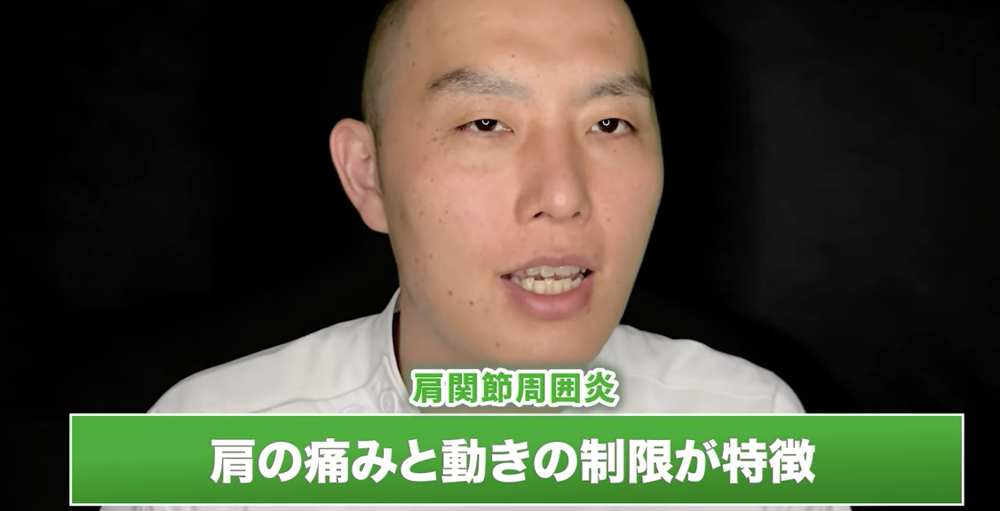
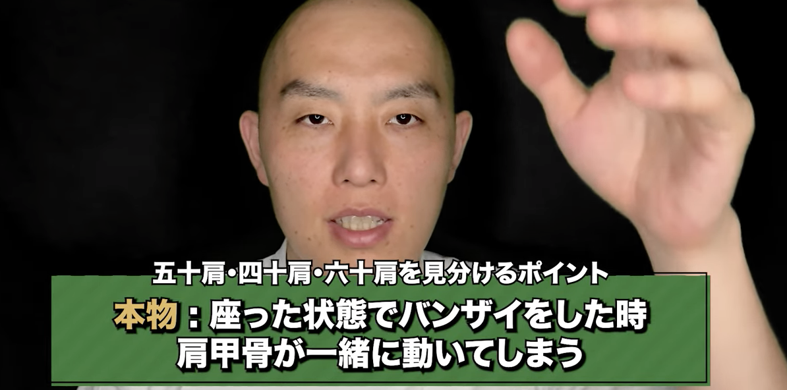
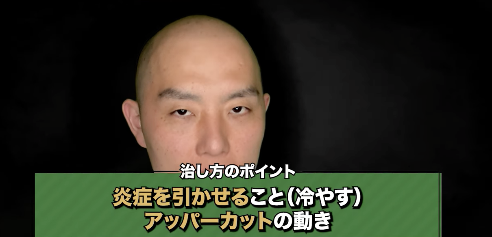
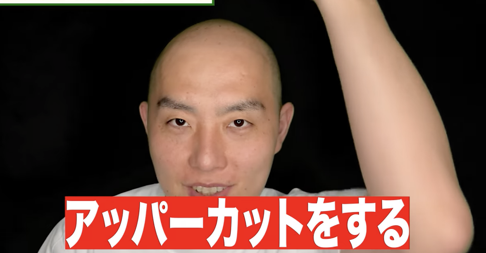
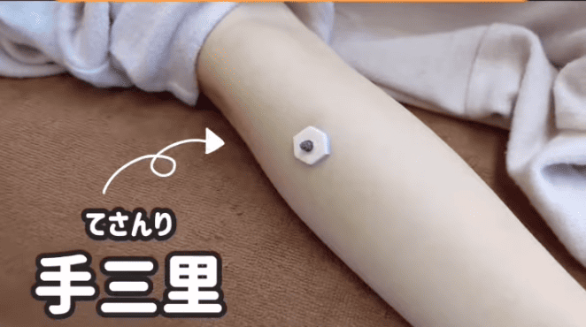
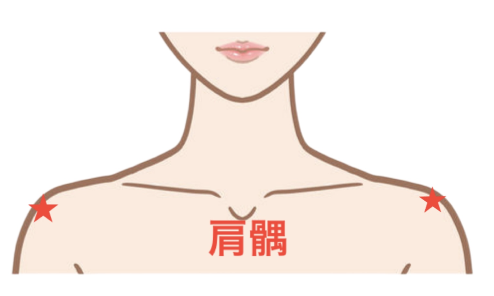

五十肩の鍼灸
40〜60代に多い肩の激痛・可動域制限（五十肩）を、炎症期と拘縮期の見極めと鍼灸・全身バランス調整で改善する解説。
院長YouTube解説・関連動画
五十肩の症状

五十肩には本物と偽物がある

肩が痛く五十肩と判断された場合、病院側からすれば偽物でも本物でも行うことは一緒で、様子を見てみようということで終わってしまうことが多いです。
本物の場合、座った状態でバンザイをした時肩甲骨が一緒に動いてしまいます。
原因は靭帯の炎症のため、靭帯が動いた時点で痛みが出ます。痛みを軽減しようとして肩甲骨から一緒に上げようとします。左右で比べればわかります。バンザイすると明らかに肩から上がってしまう場合は本物の五十肩です。
肩は痛くてもバンザイができる場合は偽物です。マッサージに行ったり鍼に行ったりすることで一発で改善します。

五十肩の改善方法は冷やして
アッパーカットを行うこと
本物に該当する場合の初期対応は、肩を思いっきり冷やすことです。靭帯の至る所で炎症が起き、痛みがどんどん強くなっていくためこの炎症を早く引かせることが大事です。
ステロイドを打って強制的に止める方法もありますが、ステロイドを打ちすぎると靭帯が細くなり改善した後も少しの動きで肩の部分断裂や完全断裂する人が多いです。
ステロイドは、病院でも回数制限を設けていることが多く、打ちすぎない方が予後が良いため3回までがおすすめです。自分で行う場合は氷嚢でとにかく炎症を引かせましょう。
痛みが強い時期を乗り越えると徐々に関節が硬くなります。炎症がひき、再生し、腱が厚くなるため、痛みがある程度なくなった時点でアッパーカットを行います。ボクシングのアッパーの練習をして肩が耳までくっつくようになると、真横、真後ろに動くことができるようになります。
バンザイできない状態では肩は真横や真後ろには動くことができません。靭帯の構造上の問題があって無理矢理真横に上げていたり真後ろに行こうとすると痛みが強くなってまた炎症を起こしてリハビリをしている人が多くいます。
この症状は痛いと思った時点でまた炎症が発生しているため俯瞰してみるとなかなか改善しません。
アメリカの五十肩の改善方法でステロイドを打って思いっきり肩を上げる方法がありますが、それを行った人が悪化して当院に来ることも多いです。

炎症を引かせてアッパーカットの動きをすることをお勧めします。
腕が耳にくっつくくらいに可動性を出さないと真横も真後ろも行かないため、どんどんバンザイをして耳にくっつけるように頑張って欲しいです。
その間も痛いと感じる場合は冷やしましょう。物を取ろうとして痛みが出た時点でまた炎症が始まるため、痛みが出たら冷やして無理をしないことが大事です。
病院でリハビリを長い間行っている人がいますが、リハビリを行って肩が痛いと感じるとまた痛みが強くなりなかなか改善しません。五十肩は痛みとリハビリの適切な塩梅が必要なのです。そのことを理解せずに動かしている人には、痛い状態で１〜2年もリハビリを行っている人もいます。
五十肩はきちんと改善をすれば半年で改善します。悪化させて良くして悪化させて良くしてということで改善に時間がかかっている人もいます。五十肩の改善には、痛みが極端に出ないように生活しながら動かすことが大事です。
三角筋を動かさないようにする場合は危険です。硬結肩といい炎症で厚くなった靭帯が完全に固まって可動域が回復しなくなりリカバリーが不可能になってしまうため、痛いなりに動かすことが重要です。
アッパーして動かしているうちに耳までつくようになります。そこまでいけば少しずつ真横真後ろにもいくようになります。
筋肉をほぐすことも良いですが、靭帯が原因のため周りの筋肉をほぐして楽になった気になることは間違いです。靭帯に対してどうアプローチをするかが大事なのです。
パソコン作業でだるい人にオススメのツボ

脳は辛い状況を感じなくするため体の一部に痛みやだるさを作ります。パソコン作業で辛い人は、パソコン作業をさせないために腕に疲労を感じさせているのです。
パソコン作業で体がだるい人は、症状を解消するには癒す効果のあるツボである手三里にお灸をすることをお勧めします。
ツボの位置と押し方
肩井は、首のつけ根と肩先を結ぶ線の中央にあります。
押し方は、押すツボと反対の手を肩に乗せて指の腹で揉みながら押します。こぶしで軽くたたいて刺激をする方法もお勧めです。
ただし、急激に強い刺激を与えると脳貧血が起きる可能性もあります。気持ち良いと感じられるほどの力で、優しく押したりたたいたりするようにしましょう。
臀臑は、腕の付け根の三角筋の終わりにあります。
押し方は、人差し指と中指の腹で軽く揉みながら押します。ツボを押しているとき、合わせて首をゆっくり回すことでより五十肩の改善に効果があります。

肩髃は、肩の先端にあるツボです。腕を水平に上げた時に肩関節にできる前側のくぼみにあります。
押すときは、気持ち良い程度の力で押しましょう。
こちらのページもよく読まれています！
「無理に動かせば治る」が逆効果になりやすい五十肩の落とし穴
五十肩の初期（炎症期）は肩関節周囲の滑液包や腱板に強い炎症が起きており、ズキズキした夜間痛が特徴です。この時期に痛い方向へ無理やり腕を上げたり強く揉んだりすると、炎症と防御性収縮が悪化して拘縮が長引きます。
銀座そうぜん鍼灸院では、まず夜間痛・安静時痛を鎮めるために肩甲骨周囲や腕・遠位穴から緊張を解き、炎症が落ち着いてから可動域を広げる段階的アプローチを行います。
五十肩に用いられる代表的なツボとセルフケア

📌 詳細データ・ツボ一覧表を開く▼
| ツボ名（経穴） | 位置の目安 | 主な狙い・役割 | セルフケアの注意点 |
|---|---|---|---|
| 腎兪（じんゆ） | へその高さの背骨（第2腰椎下）から指2本外側 | 慢性腰痛・腰背部の疲労緩和 | 強圧を避け温灸やカイロでの温熱ケアが安全 |
| 委中（いちゅう） | 膝裏の横ジワの中央 | 腰痛・坐骨神経痛・下肢後面の張り緩和 | 血管・神経が浅いため優しく押圧 |
| 環跳（かんちょう） | お尻の横のくぼみ（大転子と仙骨下端の間） | 坐骨神経痛・殿部〜大腿外側の放散痛ケア | テニスボール等の強押しは神経悪化に注意 |
| 陽陵泉（ようりょうせん） | 膝外側下方、腓骨頭の前下のくぼみ | 膝痛・こむら返り・全身の筋緊張緩和 | 総腓骨神経近接のためしびれが出る強押し禁止 |
| 風池（ふうち） | 後頭部の生え際、首の太い筋の外側のくぼみ | 頸肩痛・首こり・緊張型頭痛の緩和 | 頭を反らしすぎず心地よい強さでゆっくり |
| 肩井（けんせい） | 首の付け根（第7頸椎）と肩先を結ぶ中央 | 肩こり・頸肩部の重だるさ軽減 | 妊娠中は強い刺激を避ける。揉み返しに注意 |
日常で心がけたいセルフケアと避けたいNG行動
✓ おすすめのセルフケア
- 夜間痛がある時期は、痛い側の腕の下にクッションやバスタオルを敷いて肩の牽引を防ぐ
- 肩〜肩甲骨まわりを冷やさず保温する
- 炎症が落ち着いてきたら、痛みの出ない範囲で振り子運動（アイロン体操）を優しく行う
✕ 悪化しやすいNG行動
- 夜間痛がある炎症期に、痛みを我慢して腕を無理やりバンザイ・引っ張る
- 肩関節の前面や痛い場所を強くグリグリ揉みほぐす
- 転倒後の急な激痛や全く腕が上がらない状態（腱板断裂・石灰沈着性腱炎の鑑別が必要）を放置する
査読論文が示す「筋骨格系疼痛（腰痛・関節痛・頸肩痛・坐骨神経痛）×鍼灸」の科学的エビデンス
国際的な医学データベース（PubMed・Cochrane等）で報告されている筋骨格系疼痛（腰痛・関節痛・頸肩痛・坐骨神経痛）領域の代表的な査読済み鍼灸研究です（標準治療との併用や研究上の限界を含めて掲載しています）。
📚 査読論文データ・出典表を開く▼
| 年・研究デザイン | 対象・規模 | 主な結果と臨床的意義 | 限界・出典 |
|---|---|---|---|
| 2018年 IPDメタ解析 | 慢性筋骨格痛・頭痛 39 RCTs（n=20,827） | 全領域でシャム鍼・無治療比とも有意優位（P<0.001）、1年後も効果低下約15%で持続。 | 対照設定により効果量変動。 J Pain (PMID: 29198932) |
| 2020年 Cochraneレビュー | 慢性非特異的腰痛 33 RCTs（n=8,270） | 無治療比で直後疼痛（MD -20.32）と機能（SMD -0.53）が臨床的に有意改善。有害事象は軽微。 | 施術者盲検化不可・確実性は中等度〜非常に低。 Cochrane (PMID: 33306198) |
| 2024年 多施設RCT | 慢性坐骨神経痛 216名（6病院・52週追跡） | 4週時点の下肢痛VAS減少30.8mm vs 14.9mm（差-16.0mm, P<0.001）、52週後も持続。 | 中国3次病院限定・施術者盲検化不可。 JAMA Intern Med (PMID: 39401008) |
| 2016年 メタ解析 | 変形性膝関節症 10 RCTs | 短期（13週）で疼痛（WMD -1.24, p<0.001）と機能（p<0.001）が有意改善、26週も機能維持（p=0.016）。 | 試験間の異質性が高く運動療法併用が推奨。 JBJS Am (PMID: 27655986) |
医療機関の受診を最優先すべきサイン（レッドフラッグ）
⚠ 専門医の受診・検査を最優先してください
排尿・排便障害や会陰部のしびれ（馬尾症候群疑い）、足の力が抜ける進行性筋力低下、安静時・夜間の強い痛みと発熱・体重減少、転倒後の急激な激痛（骨折疑い）がある場合は、直ちに整形外科等の医療機関を受診してください。
参考文献・出典
- 銀座そうぜん鍼灸院「五十肩の公式解説ページ」
- 2018年 IPDメタ解析（慢性筋骨格痛・頭痛 39 RCTs（n=20,827））— J Pain (PMID: 29198932)
- 2020年 Cochraneレビュー（慢性非特異的腰痛 33 RCTs（n=8,270））— Cochrane (PMID: 33306198)
- 2024年 多施設RCT（慢性坐骨神経痛 216名（6病院・52週追跡））— JAMA Intern Med (PMID: 39401008)
- 2016年 メタ解析（変形性膝関節症 10 RCTs）— JBJS Am (PMID: 27655986)
よくある質問（FAQ）
Q. 何回くらいで改善しますか？▼
Q. 痛いときも頑張ってリハビリで動かした方が良いですか？▼
Q. ステロイド注射は何回でも打って大丈夫ですか？▼
あわせて読まれる関連疾患（筋肉、骨のお悩み）
お尻から足後ろ側へ広がる痛みやしびれ。原因を見極め、腰・臀部・股関節の深層筋へ的確にアプローチします。
HTLV-1ウイルス感染者の一部に発症し、脊髄の炎症により両下肢のつっぱり・歩行障害や排尿障害が徐々に進む疾患です。
成長期の中高生がスポーツ中の急激な筋収縮により、骨盤の骨端線付着部で骨の一部が剥がれて起こる骨折です。
免疫系が自身の筋組織を攻撃して炎症と変性を起こし、対称性の筋力低下や筋痛をきたす全身性のリウマチ性疾患群です。
骨端軟骨とその周囲の軟部組織にX線上の点状石灰化像がみられ、低身長や関節・脊柱の異常を伴う遺伝性疾患群の総称です。
骨の髄内から発生する良性の軟骨腫瘍で、手指・足指などの骨の膨隆や変形、成長障害を引き起こす疾患です。
おひとりで悩まず、まずはご相談ください
銀座本院・川口・大宮・横浜・博多・田無の各院でご予約を承っております。